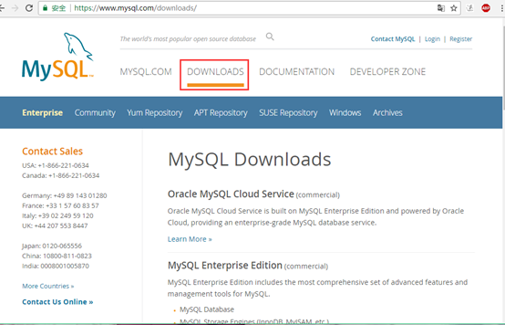
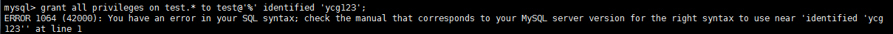
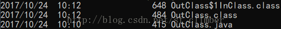
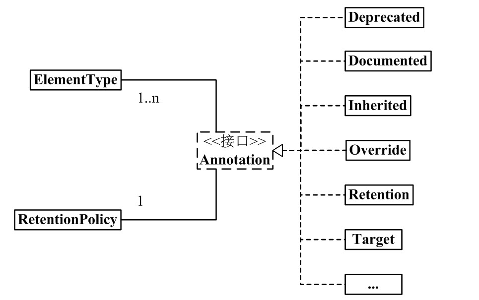
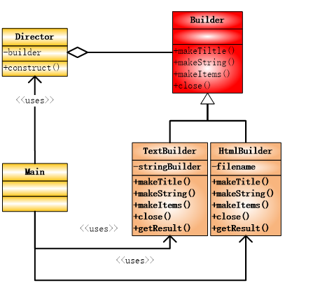
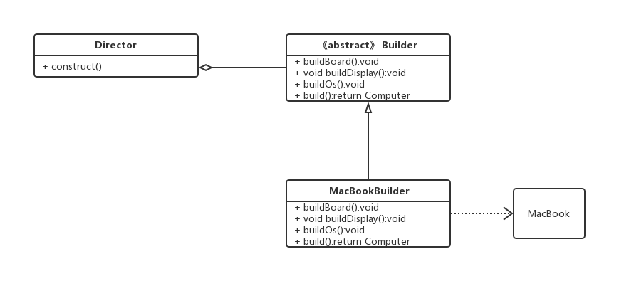

- 字符集&工具
- · HTML 字符集设置
- · HTML ASCII 字符集
- · JS 混淆/加密
- · PNG/JPEG 图片压缩
- · HTML 拾色器
- · JSON 格式化工具
- · 随机数生成器
- 最新更新
- · 正则表达式 R...
- · CSS element.cla...
- · 正则表达式 R...
- · C 语言静态数组...
- · Edge 浏览器
- · JavaScript 模板...
- · Python statisti...
关注微信

本章节我们将为大家介绍 Python 如何操作 redis，redis 是一个 Key-Value 数据库，Value 支持 string(字符串)，list(列表)，set(集合)，zset(...

1.进入官网找到自己所需的安装包：https://dev.mysql.com/ ，路径：DOWNLOAD-->MYSQL Community Edition(GRL)-->MYSQL on Windows (Ins...

1. 今天刚装了mysql8.0.13，试着分配几个账号和权限，结果报错： 2. 查资料得知mysql8的分配权限不能带密码隐士创建账号了，要先创建账号...
1、获取 acme.sh curl https://get.acme.sh | sh 如下所示安装成功: ... [Tue Sep 24 18:23:55 CST 2019] Good, bash is found, so change...
这两个函数主要提供，基于字典的访问局部和全局变量的方式。 在理解这两个函数时，首先来理解一下 Python 中的名字空间概念。Python 使用叫做...
1、在 python 里面，负数的存储方式 实例 a = bin(-3) print(a) a = bin(3) print(a) b =...

最近在看内部类的时候，有一个疑惑: 局部内部类和匿名内部类只能访问 final 的局部变量，看了几篇博客，明白了很多。 首先，我们看一个局部内...

Java 注解（Annotation）又称 Java 标注，是 JDK5.0 引入的一种注释机制。 Java 语言中的类、方法、变量、参数和包等都可以被标注。和 Java...

一、前言 今天我们讨论一下 Builder 建造者模式，这个 Builder，其实和模板模式非常的像，但是也有区别，那就是在模板模式中父类对子类中的实...

1、定义以及 UML 建模图 将一个复杂的对象的构建与它的表示分离，是的同样的构建过程可以创建不同的表示。 2、使用场景： 多个部件或...